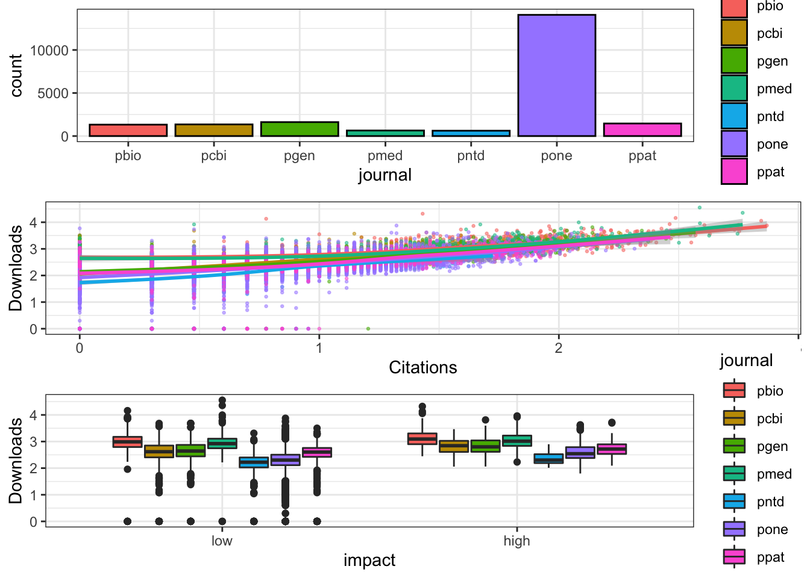
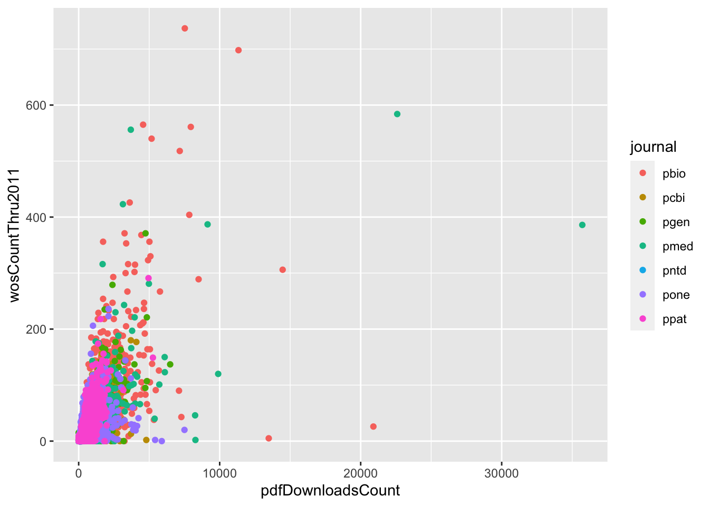
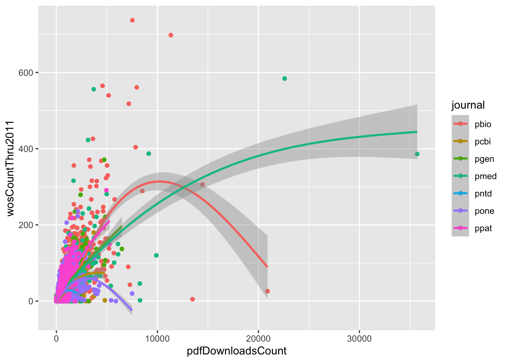
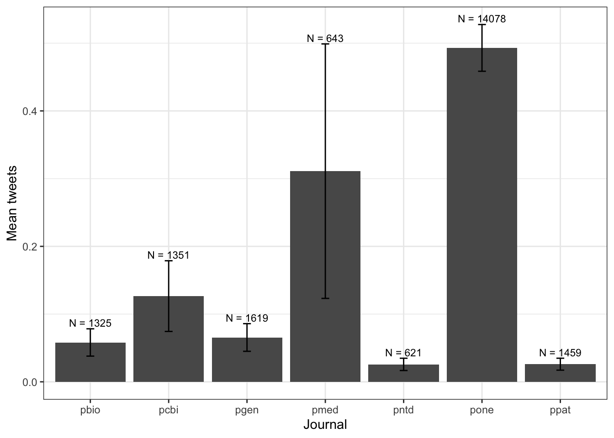
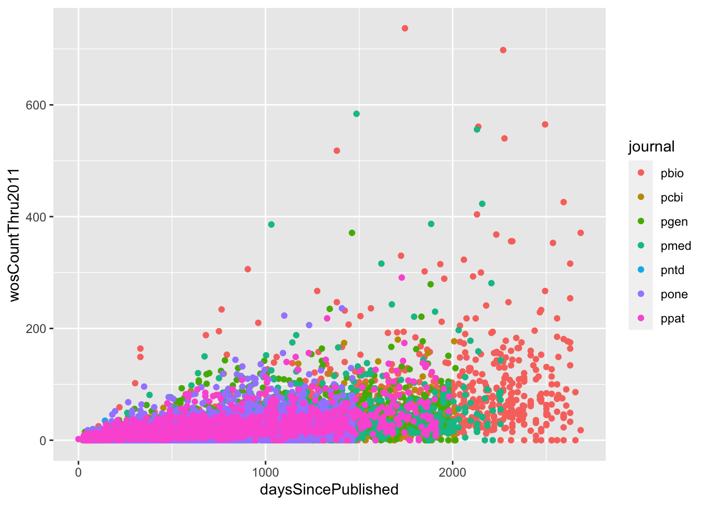
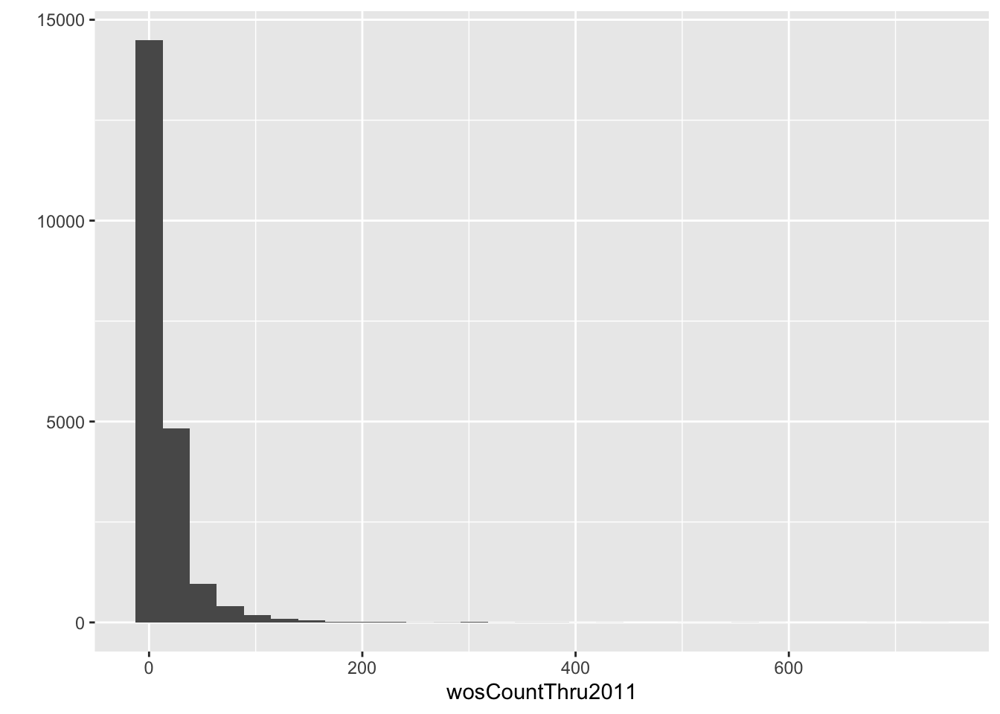
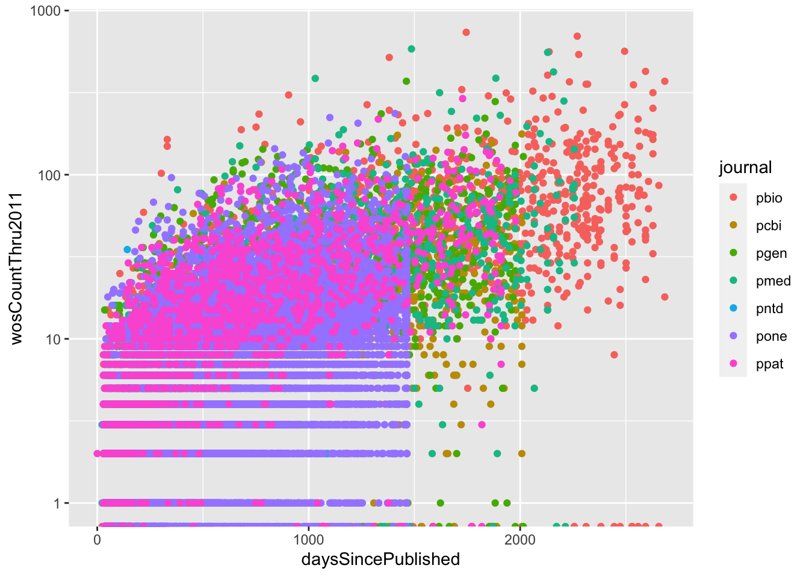
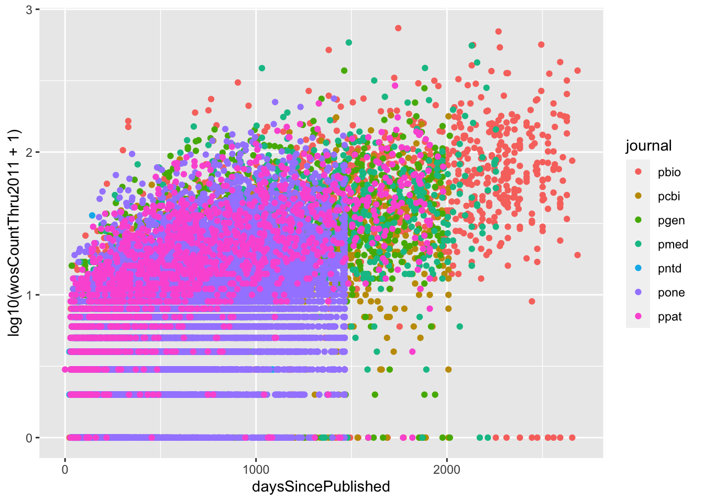
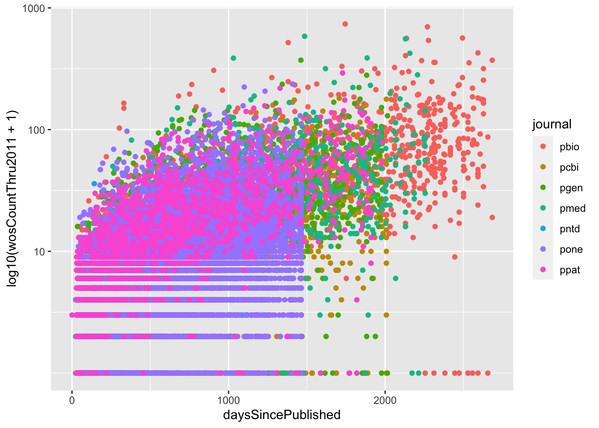

Chapter 4 The apply family
Learning Objectives
Learn to use apply family functions in place of loops.
Whenever you’re using a for loop, you might want to revise your code and see whether you can use the lapply function instead. Learn all about this intuitive way of applying a function over a list or a vector, and its variants sapply and vapply.
4.1 apply()
apply() takes Data frame or matrix as an input and gives output in vector, list or array. apply() Function is primarily used to avoid explicit uses of loop constructs. It is the most basic of all collections can be used over a matrice.
This function takes 3 arguments:
apply(X, MARGIN, FUN)apply() takes an array or matrix X, a Margin that takes a value 1 for rows or 2 for columns and applies a functoin FUN to it.
## [,1] [,2] [,3] [,4] [,5] [,6]
## [1,] 1 6 1 6 1 6
## [2,] 2 7 2 7 2 7
## [3,] 3 8 3 8 3 8
## [4,] 4 9 4 9 4 9
## [5,] 5 10 5 10 5 10## [1] 15 40 15 40 15 40
Exercise
Select the columns from count.raw file from pdfDownloadsCount to hmtlDownloadsCount and using the apply function find the mean of each column.
4.2 lapply()
Before you go about solving the exercises below, have a look at the documentation of the lapply() function. The Usage section shows the following expression:
lapply(X, FUN, ...)To put it generally, lapply takes a vector or list X, and applies the function FUN to each of its members. If FUN requires additional arguments, you pass them after you’ve specified X and FUN (...). The output of lapply() is a list, the same length as X, where each element is the result of applying FUN on the corresponding element of X.
Now that you are truly brushing up on your data science skills, let’s revisit some of the most relevant figures in data science history. We’ve compiled a vector of famous mathematicians/statisticians and the year they were born. Up to you to extract some information!
4.2.0.1 Example
# The vector pioneers has already been created for you
pioneers <- c("GAUSS:1777", "BAYES:1702", "PASCAL:1623", "PEARSON:1857")
# Split names from birth year to make split_math a list
split_math <- strsplit(pioneers, split = ":")
# Convert to lowercase strings: split_low
split_low <- lapply(split_math, tolower)
# Take a look at the structure of split_low
str(split_low)## List of 4
## $ : chr [1:2] "gauss" "1777"
## $ : chr [1:2] "bayes" "1702"
## $ : chr [1:2] "pascal" "1623"
## $ : chr [1:2] "pearson" "1857"4.2.1 Use lapply with your own function
As Filip explained in the instructional video, you can use lapply() on your own functions as well. You just need to code a new function and make sure it is available in the workspace. After that, you can use the function inside lapply() just as you did with base R functions.
In the previous exercise you already used lapply() once to convert the information about your favorite pioneering statisticians to a list of vectors composed of two character strings. Let’s write some code to select the names and the birth years separately.
The sample code already includes code that defined select_first(), that takes a vector as input and returns the first element of this vector.
4.2.2 lapply and anonymous functions
Writing your own functions and then using them inside lapply() is quite an accomplishment! But defining functions to use them only once is kind of overkill, isn’t it? That’s why you can use so-called anonymous functions in R.
Previously, you learned that functions in R are objects in their own right. This means that they aren’t automatically bound to a name. When you create a function, you can use the assignment operator to give the function a name. It’s perfectly possible, however, to not give the function a name. This is called an anonymous function:
# Named function
select_first <- function(x) { x[1] }
# Use anonymous function inside lapply()
lapply(list(1,2,3), function(x) {x[1]})4.2.3 Use lapply with additional arguments
In the video, the triple() function was transformed to the multiply() function to allow for a more generic approach. lapply() provides a way to handle functions that require more than one argument, such as the multiply() function:
multiply <- function(x, factor) {
x * factor
}
lapply(list(1,2,3), multiply, factor = 3)On the right we’ve included a generic version of the select functions that you’ve coded earlier: select_el(). It takes a vector as its first argument, and an index as its second argument. It returns the vector’s element at the specified index.
4.3 sapply()
You can use sapply() similar to how you used lapply(). sapply is a user-friendly version and wrapper of lapply by default returning a vector, matrix .The first argument of sapply() is the list or vector X over which you want to apply a function, FUN. Potential additional arguments to this function are specified afterwards (...):
sapply(X, FUN, ...)4.3.1 sapply with your own function
Like lapply(), sapply() allows you to use self-defined functions and apply them over a vector or a list:
sapply(X, FUN, ...)Here, FUN can be one of R’s built-in functions, but it can also be a function you wrote. This self-written function can be defined before hand, or can be inserted directly as an anonymous function.
4.3.2 sapply with function returning vector
In the previous exercises, you’ve seen how sapply() simplifies the list that lapply() would return by turning it into a vector. But what if the function you’re applying over a list or a vector returns a vector of length greater than 1? If you don’t remember from the video, don’t waste more time in the valley of ignorance and head over to the instructions!
4.3.2.1 Example
temp=list(c(1,3,4,4,6),c(3,4,6,8,9))
# Create a function that returns min and max of a vector: extremes
extremes <- function(x) {
c(min = min(x), max = max(x))
}
# Apply extremes() over temp with lapply()
lapply(temp, extremes)## [[1]]
## min max
## 1 6
##
## [[2]]
## min max
## 3 9## [,1] [,2]
## min 1 3
## max 6 94.3.3 sapply can’t simplify, now what?
It seems like we’ve hit the jackpot with sapply(). On all of the examples so far, sapply() was able to nicely simplify the rather bulky output of lapply(). But, as with life, there are things you can’t simplify. How does sapply() react?
We already created a function, below_zero(), that takes a vector of numerical values and returns a vector that only contains the values that are strictly below zero.
4.3.3.1 Instructions
- Apply
below_zero()overtempusinglapply()and store the result infreezing_s. - Apply
below_zero()overtempusingsapply(). Save the resulting list in a variablefreezing_l. - Compare
freezing_ltofreezing_susing theidentical()function.
# temp is already prepared for you in the workspace
# Definition of below_zero()
below_zero <- function(x) {
return(x[x < 0])
}
# Apply below_zero over temp using lapply(): freezing_l
freezing_l <- lapply(temp, below_zero)
# Apply below_zero over temp using sapply(): freezing_s
freezing_s <- sapply(temp, below_zero)
# Are freezing_l and freezing_s identical?
identical(freezing_l, freezing_s)## [1] TRUE4.4 vapply()
Before you get your hands dirty with the third and last apply function that you’ll learn about in this intermediate R course, let’s take a look at its syntax. The function is called vapply(), and it has the following syntax:
vapply(X, FUN, FUN.VALUE, ..., USE.NAMES = TRUE)Over the elements inside X, the function FUN is applied. The FUN.VALUE argument expects a template for the return argument of this function FUN. USE.NAMES is TRUE by default; in this case vapply() tries to generate a named array, if possible.
For the next set of exercises, you’ll be working on the temp list again, that contains 7 numerical vectors of length 5. We also coded a function basics() that takes a vector, and returns a named vector of length 3, containing the minimum, mean and maximum value of the vector respectively.
4.4.0.1 Example
# temp is already available in the workspace
# Definition of basics()
basics <- function(x) {
c(min = min(x), mean = mean(x), max = max(x))
}
# Apply basics() over temp using vapply()
vapply(temp, basics, numeric(3))## [,1] [,2]
## min 1.0 3
## mean 3.6 6
## max 6.0 94.4.0.2 Exercise
<br>
Use the table() function and one of the apply functions to see how many counts of each year and articleType are available.
Explain which function you used and what does the output look like?
</div>
<!--chapter:end:04-Apply_family.Rmd-->
# Advanced Plotting
"The greatest value of a picture is when it forces us to notice what we never expected to see"
-John Tukey
---
## Setup
**1. Install the `tidyverse` package.**
```r
library(tidyverse)## ── Attaching packages ───────────────────────────────── tidyverse 1.3.0 ──## ✓ tibble 3.0.1 ✓ dplyr 0.8.5
## ✓ tidyr 1.0.3 ✓ stringr 1.4.0
## ✓ readr 1.3.1 ✓ forcats 0.5.0
## ✓ purrr 0.3.4## ── Conflicts ──────────────────────────────────── tidyverse_conflicts() ──
## x dplyr::filter() masks stats::filter()
## x dplyr::lag() masks stats::lag()2. Filter data.
We will be using the publication dataset that we read into R in Chapter 2 as counts.
4.5 Review of ggplot2 basics
ggplot2 is a plotting package that makes it simple to create complex plots from data in a data frame. Graphics are built step by step by adding new elements. Adding layers in this fashion allows for extensive flexibility and customization of plots.
A plot can be divided into different fundamental parts:
Plot = data + aesthetics + geom
Required building blocks:
- data
- aesthetics - describe how data are mapped to colour, size, shape, location
- geoms - geometric objects like points, lines, shapes
Optional building blocks:
- facets - describes how panel plots should be constructed
- stats - statistical transformations like binning, quantiles, smoothing
- coordinates - describes the system in which the locations of the geoms will be drawn
- scales - what scale an aesthetic map uses (ex. male = red, female = blue)
To build a ggplot, we will use the following basic template that can be used for different types of plots:
Specify which data set to use for the plot using the
dataargument.Define a “mapping” (using the aesthetic (
aes) function), by selecting the variables to be plotted and specifying how to present them in the graph, e.g. as x/y positions or characteristics such as size, shape, color, etc.Add “geoms” – graphical representations of the data in the plot (points, lines, bars).
ggplot2offers many different geoms; common ones include:
geom_point()for scatter plots, dot plots, etc.geom_boxplot()for boxplots.geom_histogram()for histograms.geom_barplot()for barplots.geom_line()for trend lines, time series, etc.
Example:

Adding aesthetics:
p <- ggplot(research, aes(x = pdfDownloadsCount,
y = wosCountThru2011)) +
geom_point(aes(color = journal))
p
4.6 Statistics
The function geom_smooth() adds a loess curve to the data along with a 95% confidence interval.
p <- ggplot(research, aes(x = pdfDownloadsCount,
y = wosCountThru2011)) +
geom_point(aes(color = journal)) +
geom_smooth()
p## `geom_smooth()` using method = 'gam' and formula 'y ~ s(x, bs = "cs")'
If we move the colour to the base ggplot call, we get loess curves for each level of that factor.
p <- ggplot(research, aes(x = pdfDownloadsCount,
y = wosCountThru2011,
color = journal)) +
geom_point() +
geom_smooth()
p## `geom_smooth()` using method = 'gam' and formula 'y ~ s(x, bs = "cs")'
Check the help page for the function geom_smooth() for more information about how the curve is made. For example, to map a linear model onto the plot, you can choose method = "lm".
p <- ggplot(research, aes(x = pdfDownloadsCount,
y = wosCountThru2011,
color = journal)) +
geom_point() +
geom_smooth(method = "lm")
p## `geom_smooth()` using formula 'y ~ x'
4.7 Scales
Now let’s look at the relationship between days since published and citation count.
p <- ggplot(research, aes(x = daysSincePublished,
y = wosCountThru2011)) +
geom_point(aes(color= journal))
p
It looks like most of the citation counts are close to 0. We can quickly check the distribution of this variable using a qplot.
## `stat_bin()` using `bins = 30`. Pick better value with `binwidth`.
To control the plot axes, we use variants of the functions scale_x_* and scale_y_*.
p <- ggplot(research, aes(x = daysSincePublished,
y = wosCountThru2011)) +
geom_point(aes(color= journal)) +
scale_y_log10()
p## Warning: Transformation introduced infinite values in continuous y-axis
How can we fix this?
p <- ggplot(research, aes(x = daysSincePublished,
y = log10(wosCountThru2011 + 1))) +
geom_point(aes(color= journal))
p
Notice what this fix has done to the way the y-axis is labelled. To manually update the axis label, we can use the scale_y_continuous() function.
p <- ggplot(research, aes(x = daysSincePublished,
y = log10(wosCountThru2011 + 1))) +
geom_point(aes(color= journal)) +
scale_y_continuous(breaks = c(1,2,3), labels = c(10, 100, 1000))
p
4.8 Faceting
There are two functions to control how plots are divided into facets: facet_wrap() and facet_grid().
4.9 Themes
In addition to theme_bw(), which changes the plot background to white, ggplot2 comes with several other themes which can be useful to quickly change the look of your visualization. The complete list of themes is available at https://ggplot2.tidyverse.org/reference/ggtheme.html. theme_minimal() and theme_light() are popular, and theme_void() can be useful as a starting point to create a new hand-crafted theme.
The ggthemes package provides a wide variety of options (including an Excel 2003 theme). The ggplot2 extensions website provides a list of packages that extend the capabilities of ggplot2, including additional themes.
4.10 Color palettes
You can create your own color palettes using the colorRamp() or colorRampPalette() function.
colorRamp() returns a function that takes values between 0 and 1, indicating the extremes of the color palette.
colorRampPalette() returns a function that takes integer arguments and returns a vector of colours.
## [,1] [,2] [,3]
## [1,] 255 0 0## [,1] [,2] [,3]
## [1,] 127.5 0 127.5## [,1] [,2] [,3]
## [1,] 0 0 255## [1] "#FF0000" "#0000FF"## [1] "#FF0000" "#E2001C" "#C60038" "#AA0055" "#8D0071" "#71008D" "#5500AA"
## [8] "#3800C6" "#1C00E2" "#0000FF"Or, you can use the RColorBrewer package to get a premade colour palette.
There are three types of palettes: * Sequential * Diverging * Qualitative

4.11 Multiple plots
There are two useful packages for combining multiple plots: gridExtra and cowplot.
gridExtra has two useful functions: grid.arrange() and arrangeGrob(). However, these functions make no attempt at aligning the plot panels; instead, the plots are simply placed into the grid as they are, so the axes are not aligned. If axis alignment is required, the plot_grid() function of the cowplot package is better. We will try using both here.
4.11.1 The gridExtra package
4.11.2 The cowplot package
4.11.3 Saving plots
The easiest way to save a plot is using the ggsave() function.
4.12 Additional Resources
http://r-statistics.co/Top50-Ggplot2-Visualizations-MasterList-R-Code.html
- Mailing list: http://groups.google.com/group/ggplot2
- Wiki: https://github.com/hadley/ggplot2/wiki
- Website: http://had.co.nz/ggplot2/
- StackOverflow: http://stackoverflow.com/questions/tagged/ggplot
Cheatsheet